Project Plan: The Grooveshroom
Originally, I was planning on creating a music reactive lamp. When music is played or when someone is singing, the light in the mushroom will either dim or brighten depending on the volume of the sound.
However, the microphone that was provided could not read the differences in volume, so I have changed the input device to be a simple button.
The reason why I want a mushroom lamp is because mushrooms are adorable and mushroom shaped things are gaining popularity.

3D Model
Materials Needed
- Button (1x)
- NeoPixel LEDs strip (1-3x)
- Wires (as many as you need)
- Arduino Board (1x)
- Breadboard (1x)
Laser Cutting
The base where we will store the Arduino boards and circuits will be laser cut. It is around 140mm wide. I originally wanted to do a hexagonal log but I found it too difficult to create the 3D model for, so I ended up doing a fingerjoint box.
A good thing about the box shape is that it is easier to place the Arduino board into so you would not have it falling off and potentially causing damages.
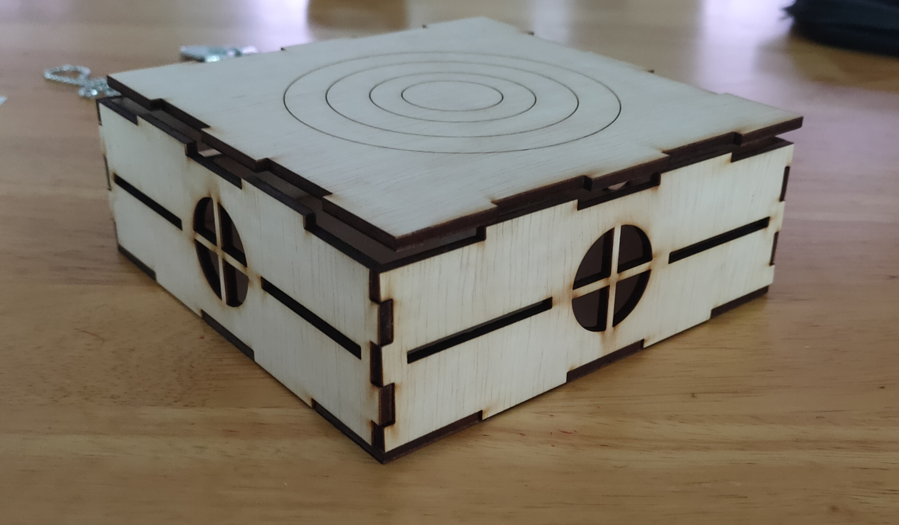3D Printing
The Mushroom cap and stalk will be 3D printed. The infills will be at 5% because it is just a proof of concept and not an actual product for people to use. I made the walls 1mm thick because I want to print it as fast as possible without losing the structural integrity.
If it was possible, the 3D printed mushroom would be transparent but the fabrication labs do not have enough space for students to print their project. Hence, in this case, we put it on top of the cap so we know how it will look like with a transparent cap.
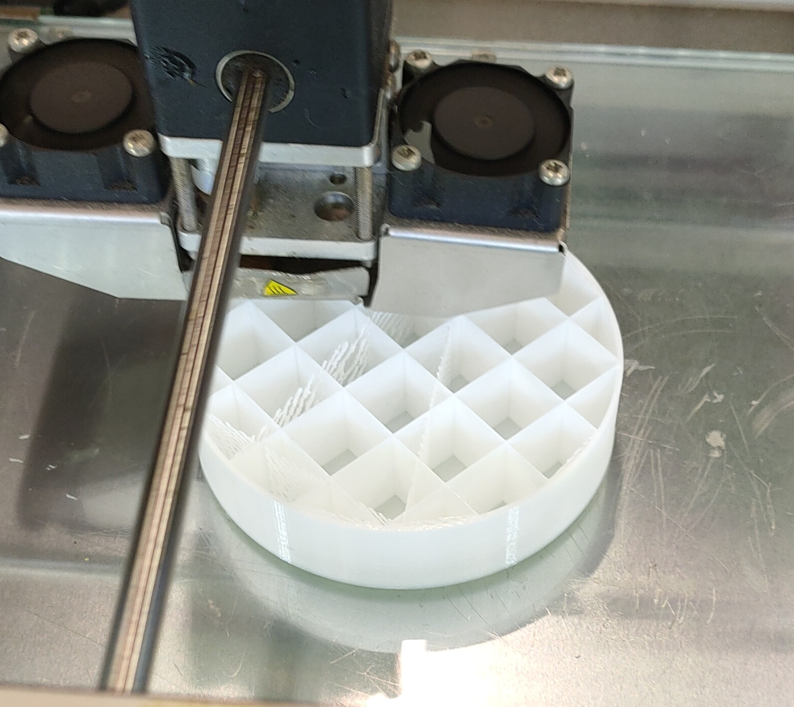 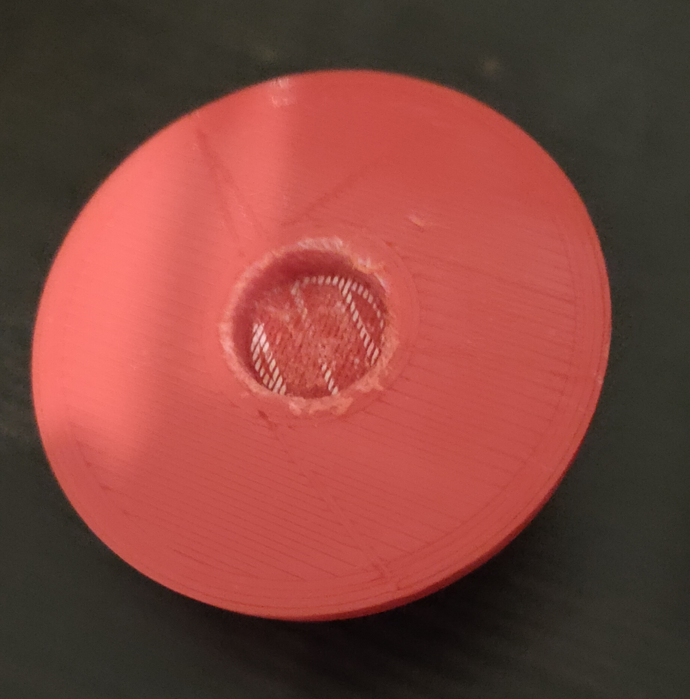Coding
Before you start on any code, you should create a flow so you understand how the code will go. Make sure to leave a lot of comments in your work as well so if you come back to it, you will understand how it works.
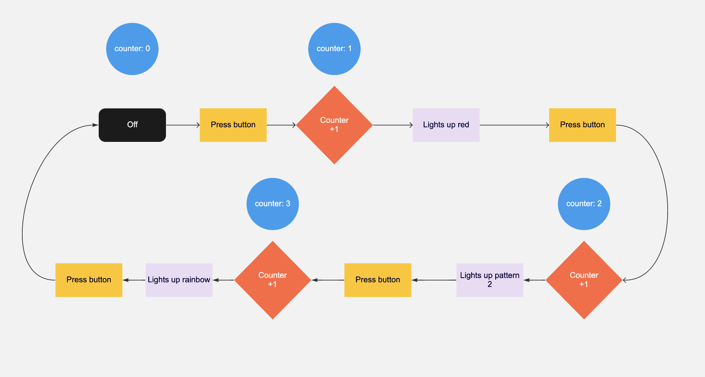 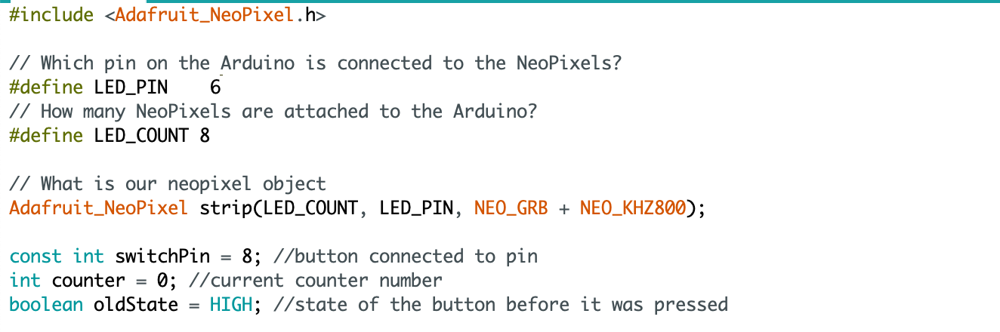


Final Alterations
Because of the change in input (from sound to touch), I also had to change the design to fit what I am doing. So i removed the top portion of the box to place my Arduino board into. I also placed the mushroom in a corner so you can look at it.
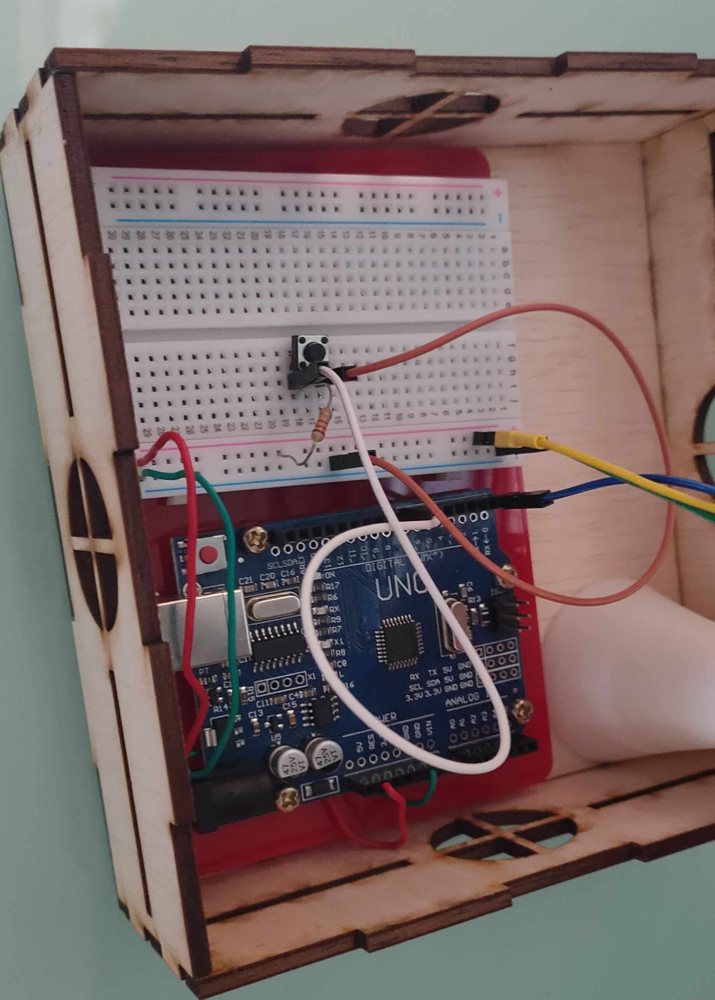 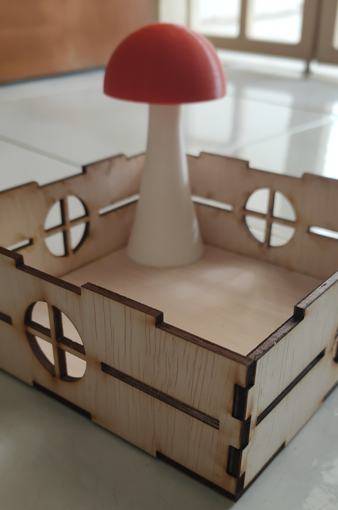Mistakes & Tips
While I was laser cutting, I accidentally created windows that were not attached to the walls. This resulted in a large hole instead of a patterned window as seen in the 3D model above. I managed to fix it by redoing the windows in Adobe Illustrator to be the ones you see in the final laser cut box.
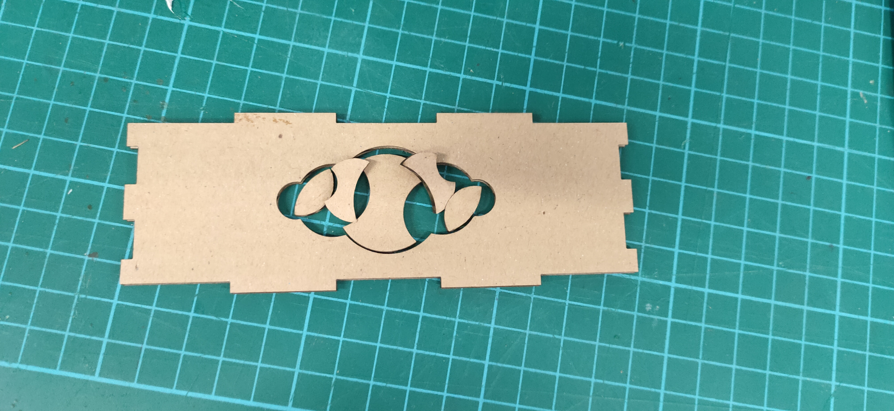Another thing that could have went wrong but thankfully did not is the engravings on the top of the box. You have to make the lines into different colours so that you can give different settings to the laser while cutting.
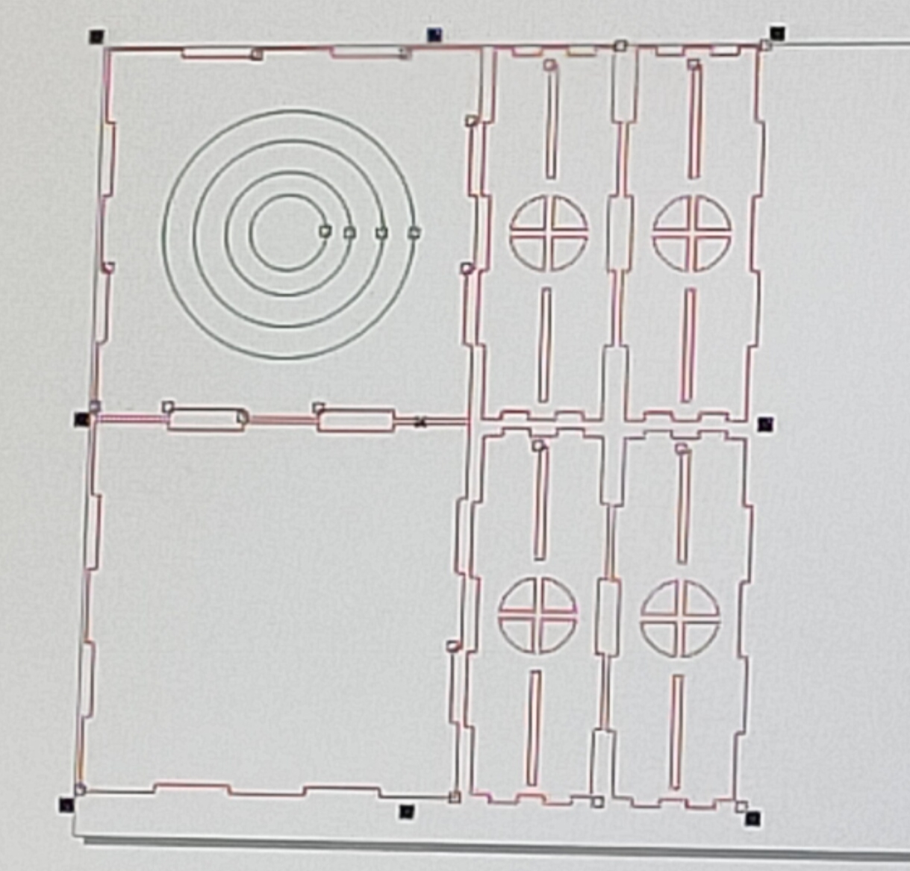For 3D printing, I have accidentally printed the stalk to be too big. This was because I mistook radius and diameter. Luckily, I have set those numbers in the parameters so changing it was as simple as changing the numbers.
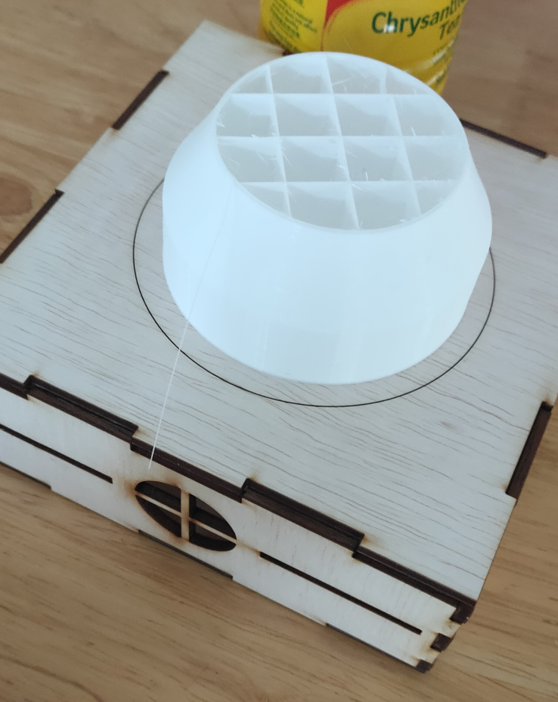Hero Shot
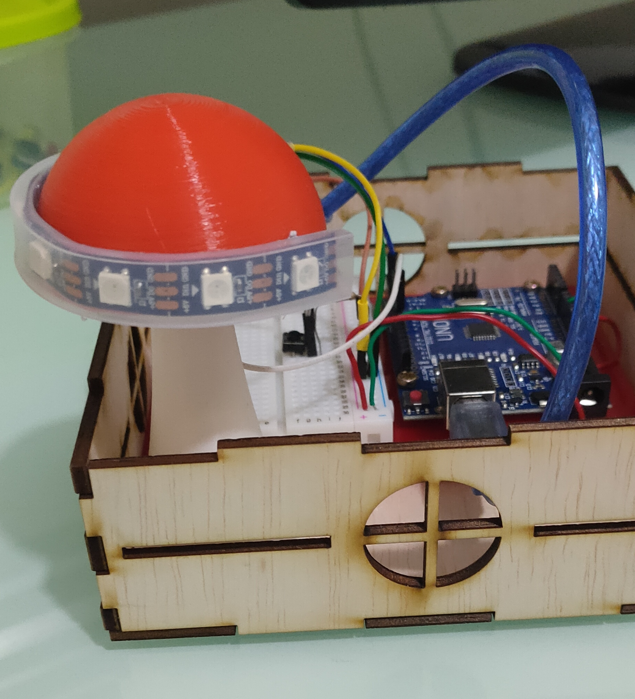 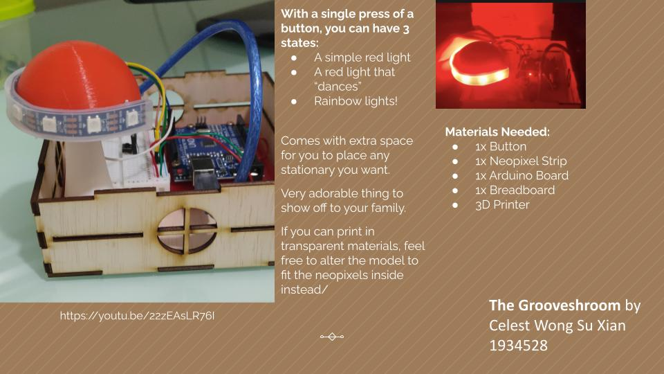https://youtu.be/22zEAsLR76I
References
Music LED Light Box, Music Reactive Desk, Glowing LED Mushroom Log Lamp